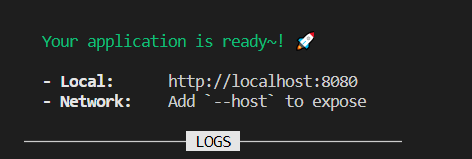
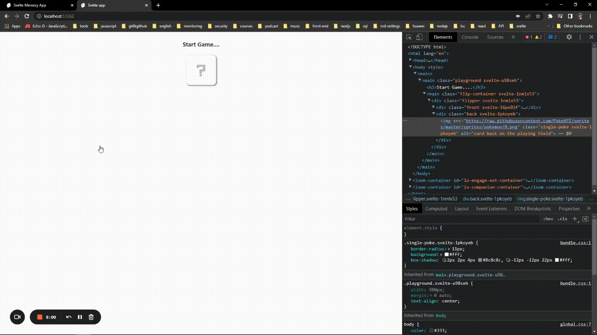

Selamlaaaaar 👋
Herşeyden önce umuyorum ki bu basit döküman Svelte yolculuğunda rehber
olabilir. Son zamanlarda Svelte ile uygulama geliştirmeye başladım. Svelte'in
yapısına daha çok hakim olabilmek ve öğrendiklerimi paylaşabilmek için bu
dökümanı oluşturdum. Döküman içerisinde adım adım Game bağlantısında
görebileğin oyunu nasıl geliştirdiğimi anlattım, ilgi duyuyorsan aynı
adımları takip ederek benzer bir uygulama oluşturabilir, veya küçük bir kaynak
modelinde kullanabilirsin. Svelte içeriği iyi ayrıntılanmış dökümantasyonlara
(docs,
examples) sahip,
dökümantasyonları inceledikten sonra uygulamayı takip etmen daha faydalı
olabilir.

İçeriğin detaylarını sol tarafta yer alan haritalandırma ile takip
edebilirsin. İlk bölümlerde Svelte'i nasıl kullanabileceğine dair
bilgilendirmeler yer alıyor. Bu kısımlara hakimsen, atlayarak
Start Game bölümünden devam
edebilirsin.
🪁 Oyun hakkında
Projemizde bir hafıza oyunu geliştireceğiz. Kullanıcıların seviyelerine göre
arayüz üzerinde kartlar bulunacak. Kartlara click eventi gerçekleştiğinde
kartlar açılacak, kullanıcılar açılan kartları eşleştirmeye çalışacaklar.
Eşleşen kartlar açık bir şekilde arayüz üzerinde dururken başarılı eşleşme
sonucunda kullanıcıya puan kazandıracak, başarısız her eşleşmede kartlar
bulundukları yerde yeniden kapatılacaklar. Bütün kartlar eşleştiklerinde, bir
sonraki seviyede yer alan kartlar arayüze kapalı olarak yeniden gelecektir.

Oyun başlangıcında kullanıcıdan bir kullanıcı adı girmesi, avatar listesinde
yer alan görsellerden birini seçmesi beklenecektir (Avatarlar ne kadar evcil
gözükseler de, güç içlerinde gizli 🐱👤). Bu seçilen değerler oyunun arayüzünde
kartların yer aldığı bölümün altında score & level değerleri ile
birlikte gösterilecektir. Kullanıcı adı ve seçilen avatar stabil değerler olarak
tutulurken, score & level değerleri dinamik olarak kullanıcı davranışına göre
güncellenecektir.
🪁 Svelte nedir?
Svelte günümüz modern library ve framework habitatının komplex yapılarını
azaltarak daha basit şekilde yüksek verimliliğe sahip uygulamalar
geliştirilmesini sağlamayı amaçlayan bir derleyicidir. Modern framework/library
ile birlikte geride bıraktığımız her süreçte farklı ihtiyaçlar için yeni bir
öğrenme süreci ortaya çıktı. Öğrenme döngüsünün sürekli olarak geliştiricilerin
karşısına çıkması bir süre sonrasında illallah dedirtmeye başladığı gayet
aşikar. Svelte alışık olduğumuz html & css & js kod yapılarına benzer bir
sözdizimine sahip olması, props ve state/stores güncellemeleri için 40 takla
atılmasına gerek kalınmaması gibi özellikleri ile bu döngünün dışına çıkmayı
başarabilmiş.. ve umuyorum ki bu şekilde sadeliğini korumaya devam edebilir.
Stack Overflow Developer Survey 2021 anketinde geliştiriciler tarafından %71.47 oranıyla en çok sevilen
web framework Svelte olarak seçildi.
🪁 Basit ifadeler
Bazı bölümlerde aynı kelimeleri tekrar etmemek için, bazı kısayol ifadeleri
kullandım(tamamen salladım). Sayısı çok fazla değil, sorun yaşayacağını
düşünmüyorum.
_Playground_- Playground.svelte Component
+ User.svelte- User.svelte dosyası oluşturuldu.
Avatar/- Avatar klasörü oluşturuldu.
+ User.svelte + Header.svelte + Avatars.svelte- User.svelte, Header.svelte, Avatars.svelte dosyaları oluşturuldu.
+ User > Avatar.svelte- User klasörü içerisinde Avatar.svelte dosyası oluşturuldu.
+ public > assets > images > pasa.jpg, sabuha.jpg- public > assets > images klasörü içerisinde pasa.jpg, sabuha.jpg
dosyaları oluşturuldu.
- public > assets > images klasörü içerisinde pasa.jpg, sabuha.jpg
🪁 Svelte projesi oluşturma
Npx ile yeni bir proje oluşturma:
npx degit sveltejs/template remember-em-all
Svelte Typescript notasyonunu desteklemektedir. Typescript üzerinde
yapabileceğiniz bütün işlemleri Svelte projelerinde kullanabilirsin.
cd remember-em-all node scripts/setupTypeScript.js
Gerekli olan bağımlılıkları projemize ekleyerek ayağa kaldırabiliriz.
npm install npm run dev
Bu komutlar sonrasında konsol üzerinde projenin hangi port üzerinde çalıştığını
görebilirsin. Windows işletim sistemlerinde varsayılan 8080 portu işaretli
iken, bu port üzerinde çalışan proje bulunuyorsa veya farklı işletim sistemi
kullanıyorsan port numarası değişkenlik gösterebilir.

🪁 Svelte nasıl çalışır?
Svelte bileşenleri .svelte uzantılı dosyalar ile oluşturulur. HTML'e benzer
olarak script, style, html kod yapılarını oluşturabilirdiğiniz üç farklı bölüm
bulunuyor.
Uygulama oluşturduğumuzda bu bileşenler derlenerek, pure Javascript
kodlarına dönüştürülür. Svelte derleme işlemini runtime üzerinde
gerçekleştiriyor. Bu derleme işlemiyle birlikte Virtual DOM bağımlılığını
ortadan kalkıyor.

🪁 Proje bağımlılıkları
-
Typescript
Typescript, Javascript kodunuzu daha verimli kılmanızı ve kod kaynaklı
hataların önüne geçilmesini sağlayan bir Javascript uzantısıdır. Projenizde
yer alan .svelte uzantılı dosyalarda kullanabileceğiniz gibi, .ts
dosyalarını da destekler. -
Rollup
Svelte kurulumunuzla birlikte root folder üzerinde rollup.config.js dosyası
oluşturulacaktır. Rollup Javascript uygulamalar için kullanılan bir modül
paketleyicidir, uygulamamızda yer alan kodları tarayıcının anlayabileceği
şekilde ayrıştırır. Svelte kurulumunda default olarak projenize eklenir.
🪁 Svelte yapısını inceleme
Varsayılan src/App.svelte dosyasını kontrol ettiğimizde daha önce
değindiğimiz gibi Javascript kodları için script, html kodları için main
ve stillendirme için style tagları bulunuyor.
🎈 script etiketinde lang özelliği Typescript bağımlılığını eklediğimiz
için ts değerinde bulunmaktadır. Typescript kullanmak istediğin svelte
dosyalarında lang özelliğine ts değerini vermen yeterli olacaktır.
🎈 main etiketinde html kodlarını tanımlayabileceğin gibi, bu etiketin
dışında da dilediğin gibi html kodlarını tanımlayabilirsin. Svelte
tanımladığın kodları html kodu olarak derlemesine rağmen, proje yapısının
daha okunabilir olabilmesi için kapsayıcı bir etiketin altında toplanması daha
iyi olabilir.
🎈 style etiketi altında tanımladığın stil özelliklerinden, aynı dosyada
bulunan html alanında seçiciler etkilenir. Global seçicileri
tanımlayabilir veya global olarak tanımlamak istediğin seçicileri
public/global.css dosyasında düzenleyebilirsin.
🎈 Proje içerisinde compile edilen bütün yapılar /public/build/bundle.js
dosyasında yer almaktadir. index.html dosyası buradaki yapıyı referans alarak
Svelte projesini kullanıcı karşısına getirmektedir.
🪁 Biraz pratik
Birkaç örnek yaparak Svelte'i anlamaya, yorumlamaya çalışalım. Kod örnekleri
oyun üzerinde sıkça kullanacağımız yapılar için bir temel oluşturacak.
App.svelte dosyasında name isminde bir değişken tanımlanmış. Typescript
notasyonu baz alındığı için değer tipi olarak string verilmiş. Bu notasyon ile
anlatım biraz daha uzun olabileceği için kullanmamayı tercih edicem. Github
üzerinde bulunan kodlar ile, burada birlikte oluşturacaklarımız farklılık
gösterebilir.. panik yok, Typescript'e hakim olabileceğine
eminim.
🎈 Variable erişimi
Script üzerinde tanımlanan değerleri html içerisinde çağırabilmek için
{ } kullanılmalıdır. Bu template ile değer tipi farketmeksizin
değişkenleri çağırarak işlemler gerçekleştirilebilir.
app.svelte
const user = "sabuha";
{`\{user} seni izliyor!
`}
{`\`}
Bu tanımlama ile birlikte user değerine tanımlanan her değeri dinamik olarak
html içerisinde çağırabilirsin. biraz daha biraz daha karıştıralım..
user tanımlaması sabuha değerine eşit olduğu durumlarda 'seni izliyor!'
yerine 'bir kedi gördüm sanki!' değerini ekrana getirelim.
app.svelte
{`\`}
{`\
`}
{`\`}
Tanımladığımız numb değeri her güncellendiğinde, DOM üzerinde bu değer
yeniden ve sıkılmadan güncellenmeye devam edecektir.

🎈 Component kullanımı
Uygulamalarımızda yer alan bileşenleri parçalayarak istediğimiz gibi bir bütün
haline getirebilmek üzerinde çalışırken kolaylık sağlar, tekrar eden bileşen
parçalarında yeniden çağırabilmek daha az efor sarfettirir.

Bir önceki örnekte yaptığımız random sayı üreten basit yapıyı bir component
haline getirelim. components/Content/ dizininde RandomNumber.svelte dosyasını oluşturalım.
Bu yeni componentimizi App.svelte dosyasında kullanalım.
Components > Content > RandomNumber.svelte
{`\`}
{`\
{number}
`}
{`\`}
RandomNumber componentini istediğimiz gibi çağırarak kullanmaya
başlayabiliriz.
App.svelte
{`\`}
{`\
`}
{`\`}

🎈 Componentler Arası İletişim

Küçük yapılı projelerden, komplex yapılılara kadar birçok component üzerinden
alıp farklı bir yerde kullanma, güncelleme gibi ihtiyaçlarımız olacak.
Kullanılan framework, library veya compiler'in bu ihtiyacınıza esnek çözümler
sağlayabilmesi gerekiyor. Svelte bu ihtiyaçlarınız için birden fazla ve basit
yapılara sahip çözümler barındırıyor.
🎈🎈 Props
Props kullanarak dataları bir component üzerinden farklı componentlere
aktarabilirsiniz. Componentler arası bu ilişki parent-child ile ifade edilir.
Parent üzerinden child componentlere veri aktarabiliyorken, aynı zamanda child
component üzerinden parent componente veri iletebilirsiniz.
🎈🎈 Slots
Parent-child ilişkisinde olduğu gibi verilerin alt componente
aktarılmasında kullanabilirsin. Bir template dahilinde (html içeririkleri gibi)
verilerin aktarılmasına izin verir.
🎈🎈 Context
Bir veriyi iletmeniz gereken component sayısı arttıkça, yapısını kurgulamak ve
takibini sağlamak zor ve bir yerden sonra da oldukça sıkıcı bir duruma
dönüşebilir. Context ile dataların parent üzerinden child componentler
üzerinde erişilmesini sağlar.
🎈🎈 Module Context
Component üzerinde kullandığınız veri farklı bir Component'da yer alıyorsa ve
çalışmaları birbirlerine bağımlı olduğu senaryolarda Module Context Componentlar
arasında bu senaryonun uygulanmasını sağlıyor. Verileri birden çok component ile
paylaşılmasını olanak tanır.
🎈🎈 Store
Veri taşımacılık ltd. şti.'nin joker kartı.. Verilerinizi her yerde
güncellenmesini, çağırılmasını sağlar. Kullanımı için bir hiyerarşi içerisinde
olmasına gereksinimi bulunmuyor.
🪁 Start Game
Svelte'i biraz daha yakından tanıyoruz, birlikte uygulamamızı oluşturabilmek
için yeteri kadar bilgi sahibi olduk. Kullanıcının arayüz olarak görebileceği
iki Component bulunuyor. Kullanıcı adı ve avatar seçtiği User Component, bu
seçimler sonrasında erişilen Playground Component. User Componenti ile oyunumuzu
oluşturmaya başlayalım. Yeni bir proje oluşturabilir
veya pratik yapabilmek için şuana kadarki kodları kaldırabilirsin.
src > components > User ve src > components > Playground klasörlerini
oluşturalım.
🎈 User Component
User klasörü altında Kullanıcıdan alacağımız her değer için Avatar ve
Name klasörlerini oluşturalım. Root klasörde User Component altında
tanımlanan bütün yapıların yer alacağı bir kapsayıcı dahil edeceğiz.
UserGround.svelte isminde bir dosya oluşturuyorum, parçaladığımız bütün
componentler burada yer alacak.
Playground klasörü içerisinde buna benzer bir yapıyı oluşturarak, oyun
içerisindeki bütün componentleri aynı dosya üzerinde çağıracağız.
Playground altında Wrapper > Playground.svelte dizin ve dosyasını
oluşturalım.
User Componenti üzerinde çalışırken, yapacağımız değişiklikleri inceleyebilmek
için User Component'ini Playground > Wrapper > Playground.svelte dosyasında
çağıralım.
User > UserGround.svelte
{`\`}
{`\
{componentDetail} Component
`}
{`\`}
Playground > Wrapper > Playground.svelte
{`\`}
{`\
`}
{`\`}
User Component çağırdıktan sonra üzerinde geliştirme yapmaya başlayalım.

Component üzerinde 4 farklı bölüm yer alıyor.
- Kullanıcıyı bilgilendiren bir header yazısı
- Kullanıcının görseller üzerinden avatar seçimi yapabildiği bir bölüm
- Kullanıcı adının girilebilmesi için alan
- Ve bütün bunlar tamamlandığında oyuna start veren bir button elementi
bulunuyor.

🎈 Header Component
Root folder üzerinde Header.svelte isminde bir Component oluşturuyorum.
Önceki örneklerde gerçekleştirdiğimiz gibi, Header.svelte Componentini
Userground.svelte componenti üzerinde çağıralım. Oluşturduğumuz
Header.svelte componentinin basit bir görevi bulunuyor, statik bir metin
barındırıyor.
User > Header.svelte
{`\`}
{`\
select your best pokemon and start catching!
`}
{`\`}
User > UserGround.svelte
{`\`}
{`\
`}
{`\`}
Süper iğrenç gözüküyor, öyle değil mi? İyi ki CSS var..
Playground > Wrapper > Playground.svelte
{`\`}
{`\
`}
{`\`}
Ehh... şimdi biraz daha az kötü gözüktüğü söylenebilir💩💩💩
🎈 Avatar Component
Bu Component içerisinde birden fazla bileşene ihtiyaç duyduğu için, bir klasör
oluşturarak bütün gereksinim duyduğu yapıları klasör içerisinde tanımlayalım.
Avatar/+ User > Avatar > Avatars.svelte, ImageAvatar.svelte+ public > assets > images > pasa.jpg, sabuha.jpg, mohito.jpg, limon.jpg, susi.jpg- images
Avatars.svelte Userground.svelte içerisinde çağıralım. Avatars.svelte,
ImageAvatar.svelte bir kapsayıcı görevi görecek. Bununla birlikte
ImageAvatar.svelte componentine data gönderecek.
User > Avatar > Avatars.svelte
{`\`}
{`\

 `}
`}
{`\`}
Avatars, Userground üzerinde çağırdığımda karşıma bu iki güzellik gelecek.
Avatars biraz daha işlevli bir yapıya dönüştürelim.
User > Avatar > Avatars.svelte
{`\`}
{`\
{ #each avatars as userAvatar}
{ /each}
`}
{`\`}
Oluşturduğumuz avatars dizisine ait her elemana html üzerinde #each
döngüsünde erişiyoruz. Erişilen her elemanının bilgisini ImageAvatar
componentine aktarıyoruz. Componente aktarılan bu değerlerle birlikte,
dizi içerisinde bulunan her elamanın görüntüsünü elde edeceğiz.
User > Avatar > ImageAvatar.svelte
{`\`}
{`\
 `}
`}
{`\`}
Daha güzel bir görüntüyü hak ettik. Avatarlar üzerinde CSS ile biraz
düzenlemeler yapmamız gerekti.

🎈 Name Component
Pokemon eğitmenimizin bir isim girebilmesi için gerekli olan componenti
oluşturalım.
+ /components/User/Avatar/Name, /components/User/Avatar/Name/UserName.svelte
User > Avatar > Name > UserName.svelte
{`\`}
{`\
`}
{`\`}
Diğer componentlerde yaptığımız gibi, UserName componentinin Userground
componentinde kullanalım.
Geriye son bir componentimiz kaldı. "Start" yazısına sahip bir buton
componentini oluşturarak, User klasöründe Start.svelte ismiyle kaydedererek
UserGround componentinde çağıralım.
Ta daaaa... Şuana kadar yaptığımız componentler dinamik işlemler
gerçekleştirmedi. Arayüzü oluşturmak için yeteri kadar malzememiz ortaya çıktı,
ve bunları istediğin gibi stillendirebilirsin. Bundan sonraki aşamalarda bu
componentlara dinamik özellikler kazandıracağız.

🪁 Oyun Gereksinimleri
Kullanıcının isim, avatar gibi aldığımız değerlerin yanı sıra oyunda kullanılan
standart değerler bulunabilir. Geliştireceğimiz oyun için bu değerlerden level
ve score gibi iki değer tanımlayacağız. Kullanıcı, isim ve avatar seçiminin
ardından start butonuna tıkladığında bu değerlerden level 1,
score 0 değerlerini oluşturacağız. Kullanıcı seviye atladıkça burada yer alan
değerler dinamik olarak güncellenecek.
+ /Store/Level.ts, Score.ts
Store > Level.ts
{`\`}
level isminde bir değer oluşturduk ve gezegenin iyiliği için uygulamamız
içerisinde kullanacağız. Bu değeri kullanıcı arayüz üzerindeki bütün kartları
eşleştirebildiğinde güncelleyeceğiz. Bir store değeri oluşturmak için
writable interface ile Store değerlerini oluşturabilir ve güncelleyebilirsin.
Her eşleşme sonrasında kullanıcının puan kazanabildiği score değeri
tanımlayalım.
Store > Score.ts
{`\`}
Bu değerleri farklı dosyalarda tanımlayabildiğin gibi tek bir tek bir dosya
içerisinde de score&level değerlerini tanımlayabilirsin. Bir kullanıcı
oluşturarak name & avatar & score & level değerlerini birlikte
kullanabilirsin.
Kullanıcıya ait statik bilgileri tutacağımız yeni bir class oluşturalım.
+ /Store/User.ts
Store > User.ts
{`\`}
Oluşturduğumuz UserInfo class'ını kullanıcının isim, avatar değerlerini set
edeceğiz. Bu değerlere default olarak boş String atadım, farklı içerikle
doldurabilirsin. İki değerde bir hata yoksa isStart değerine true olarak
güncelleyerek oyunu başlatacağız.
🪁 User Component
Yarım kalmış bir User Component'imiz bulunuyordu.
Tanımladığımız Store değerlerini User componenti değerlerinde kullanalım.
Burada yapacağımız son rötüşlar ile birlikte kullanıcının oyun arayüzüne
erişmesini sağlayalım.
ImageAvatar.svelte componenti üzerinde, kullanıcı avatar'a click eventini
gerçekleştirdiğinde, userInfo classinda oluşturduğumuz avatar değerini
güncelleyelim.
componenets > User > Avatars > ImageAvatar.svelte
{`\`}
{`\
 `}
`}
on:click metoduna bağladığımız fonksiyon ile kullanıcının tıkladığı avatar
üzerinde bilgiyi kolay bir şekilde elde edebiliyoruz. Konsolu açarak, logları
inceleyebilirsin.ImageAvatar componentine parametre olarak gönderdiğimiz
avatar bilgisine erişebiliyoruz, bunu kullanarak fonksiyonu biraz daha basit
hale getirelim.
componenets > User > Avatars > ImageAvatar.svelte
{`\`}
{`\
($avatar = avatarName)}
/>
`}
Kullanıcı avatarlar üzerine her click işlemi gerçekleştirdiğinde, $avatar
değerini güncelliyoruz. ImageAvatar.svelte componentini geçmeden önce
class directives kullanarak yıllaar yılllaarr önce tanımladığımız .picked ve
.unpicked classlarını anlamlı bir hale getirelim.
{`\
($avatar = avatarName)}
/>
`}
Bu güncelleme ile birlikte kullanıcının her avatar seçiminden sonra, seçilen
avatarın opacity değeri güncellenerek kullanıcının seçimi vurgulanacak.
Kullanıcıdan almamız gereken diğer bir değer, username.
componenets > User > Avatars > ImageAvatar.svelte
{`\`}
{`\
`}
Import ettiğimiz UserInfo class'inda yer alan $name store değerini, bind:value
metodu ile güncelleyebiliriz.
Şimdi en güzel tarafına gelelim.. Son rötüşları yapıp oyunumuza başlayalım.
components > Playground > Wrapper > Playground.svelte componenti
üzerinde bir if/else yapısı tanımlayalım. isStart store değerimiz false ise
kullanıcıyı name&avatar seçimi yapabildiği Componente yönlendirsin. Bunun aksi
ise basit bir head etiketini gösterelim.
componenets > Playground > Wrapper > Playground.svelte
{`\`}
{`\
#if $isStart
Start Game....
else
/if
`}
Döngüler gibi if/else Logic'leri kullanabilirsiniz. else if ihtiyacında bir
şart ifadesi olarak else if isStart === undefined tanımlaman yeterli
olacaktır.
componenets > Playground > Wrapper > Playground.svelte
{`\`}
{`\
`}
StartGame fonksiyonu ile birlikte name ve avatar store değerleri kontrol
edilecek. Bu değerlerin boş olmaması durumunda isStart store değerine true
atanarak, oyun başlatılacak konsola bir bilgi yazılacak. Bu değerlerden
herhangi biri bulunmuyorsa User componenti bulunduğu yerde kalmaya devam
edicektir. Böyle bir ihtimal için, class directives kullanarak kullanıcıyı
bilgilendirelim.
{`\`}
{`\
please, select a avatar..
`}
{`\`}
Class Directive'lerde yardımına başvurabilmek için isAvatarEmpty ve
isNameEmpty isminde iki farklı değer oluşturdum. Button'ın altında bir div
etiketi daha oluşturarak, hata mesajını burada gösteriyorum. Name için olan
hata mesajını sen düzenle.. Ve oluşturduğum div etiketini bir component olarak
yeniden oluşturup, hem name hemde avatar için kullanabilirsin. Bunu yap, hemen
ardından bir sonraki başlıkta seni bekliyorum.
🎈 Oyun Arayüzü
Oyun içerisinde kartların kullanılabilmesi için bir Component'a ihtiyacımız
bulunuyor. Bu component'i oluşturarak, oyun alanında istediğimiz sayıda kart
oluşturacağız.
🎈 Card Component
Oyun alanında kullanacağımız kartlar için componentlere ihtiyacımız olacak.
CardFront componentinde kartın pokemon resmini tutarken, CardBack
componentinde ? resmini tutacağız. Componentleri Card componentinde
çağıracağız.
Card componentini test ederken, sürekli olarak User componenti üzerinde isim
ve avatar seçimi yapmamak için Playground componentinde yer alan isStart
şartını true ifadesine çevirelim.
+ /Components/Playground/Cards/Card.svelte, CardBack.svelte, CardFront.svelte
componenets > Playground > Cards > CardFront.svelte
{`\`}
{`\
 `}
`}
{`\`}
CardFront componentinde img src özelliği olarak bir API adresi verilmiş.
Bu API'da dosya isimlerinde yer alan numaraları güncelleyerek, farklı pokemon
resimlerine erişilebilir.
CardFront componentini öncelikle Card componentinde, Card componentini de
Playground içerisinde true dönen blokta çağıralım. Aynı işlemi CardBack
componentinde tekrarlayarak Card componentleri üzerinde yaptığımız her
güncellemeyi inceleyebileceğiz.
componenets > Playground > Cards > CardBack.svelte
{`\`}
{`\
 `}
`}
{`\`}
img kapsayıcısı olan back ve front classlarına sahip kapsayıcılara
belirli özellikler katarak basit şekilde bir kart görünümü vermeye çaba
sarfettik. CardBack componentinde Card componentinde çağırarak arayüz
üzerinde nasıl göründüğünü inceleyelim.

Card componentleri birer block-element olduğu için alt alta durmaktadır.
Componentleri bir kapsayıcı içerisine alarak, inline-block seviyesine alalım.
Aynı Component içerisinde çağırdığımızdan dolayı, position: absolute stilini
verdiğimizde Card Componentinde yer alan child componentler üst üste
duracaktır.
componenets > Playground > Cards > CardBack.svelte
{`\`}
{`\
`}
{`\`}
CardBack Componentinin kapsayıcı class'ına .back, position: absolute
değerini verdiğimizde her iki kart üst üste görüntülenecektir.

CSS kullanarak Card'ın arka yüzülen her tıklama ile birlikte transform
özelliğini kullanarak CardBack Componentinin altında yer alan CardFront
içerisinde yer alan kartın görüntülenmesini sağlayacağız. Global.css
dosyamıza aşağıdaki özellikleri ekleyelim.
public > global.css
{`\`}
Card componentlerinde transform stillendirmesi sağlayarak, hover class'i
eklendiğinde dönme efekti vermesini sağlayalım.
componenets > Playground > Cards > CardBack.svelte
{`\`}
{`\
`}
{`\`}
Card componentlerinin bir bütün gibi birlikte aynı hızda, ve aynı perspektif
üzerinden dönüş sağlaması gerekiyor. Svelte'de her component içerisinde
tanımlanan style özellikleri, Component'e ait scope kadardır, diğer
componentler bu stillendirmelerden etkilenmezler. Bundan dolayı her iki class
için aynı tanımlamaları gerçekleştirelim.
componenets > Playground > Cards > CardFront.svelte
{`\`}
{`\
`}
{`\`}
Birazdan geçeceğimiz bölüm içerisinde, kartları EventDispatcher kullanarak
kartın açılma efektini yapacağız. Eventi kullanmadan önce CSS üzerinde nasıl
güncellemeler yapmamız gerektiğini göstermek istedim. Konsol üzerinde
CardBack componentine ait flipper bulunan element hover class eklediğinde
efekt gerçekleştiğini inceleyebilirsin.
GitHub Pages ile Deploy
Kaynak
-
Svelte nedir?
-
Svelte Documentation:
- Svelte Projesi Oluşturma
- Deploy:
- md files importing
- Component Communications
- https://betterprogramming.pub/6-ways-to-do-component-communications-in-svelte-b3f2a483913c
- https://livebook.manning.com/book/svelte-and-sapper-in-action/chapter-5/v-3/
:check en file: